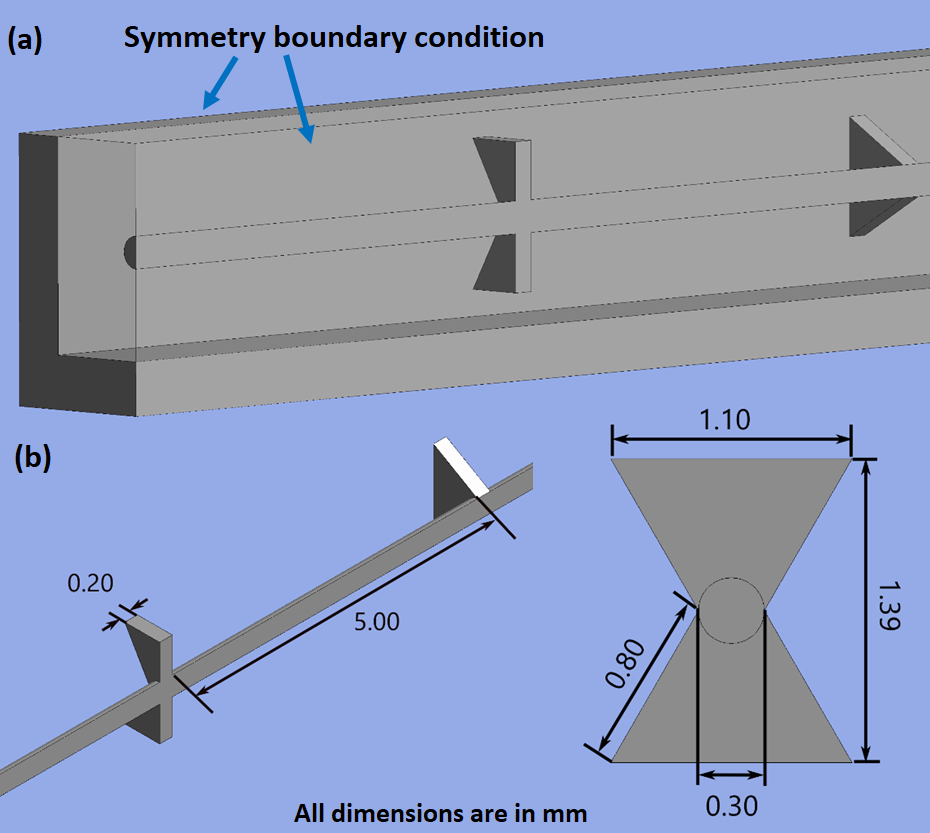
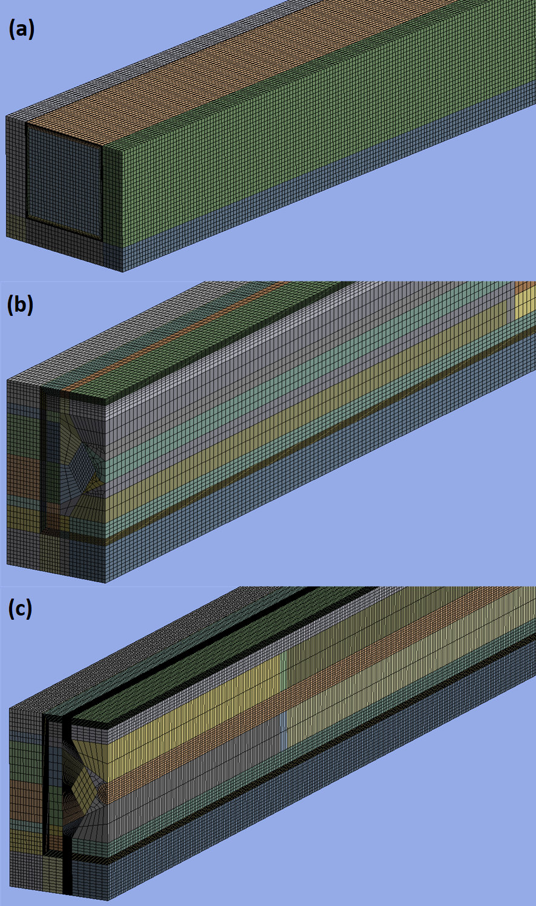
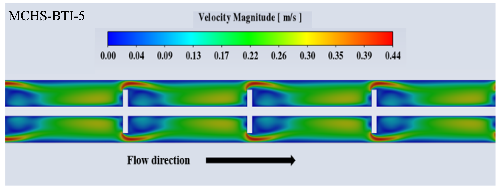
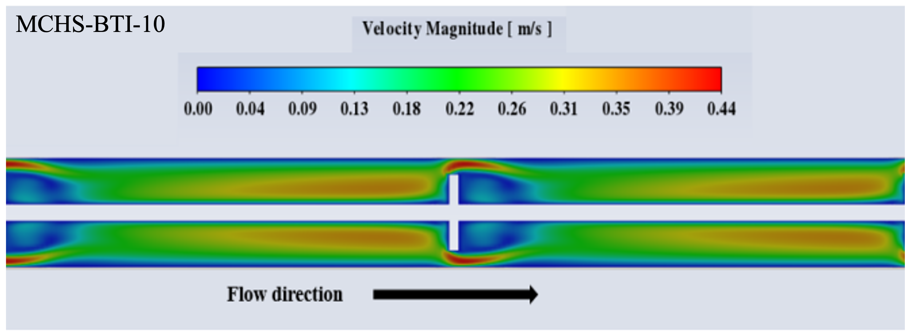
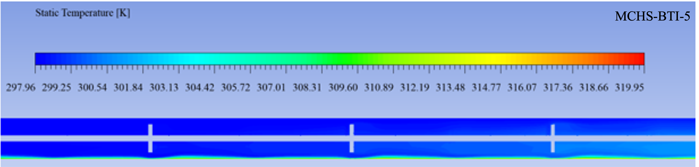
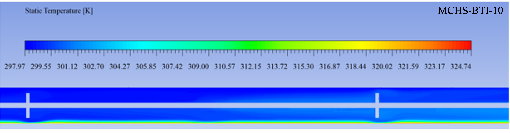

Improving heat transfer in a compact cooling channel
Compact electronic and thermal systems can generate substantial heat flux while leaving limited space for cooling hardware. Minichannel heat sinks provide high surface-area-to-volume ratios, but increasing heat transfer can also increase pressure drop and the pumping power required to move coolant through the channel.
This project investigated a passive heat-transfer enhancement strategy using modified butterfly inserts arranged inside a square minichannel. Consecutive inserts were oriented orthogonally to redirect the coolant, increase flow mixing, and repeatedly disrupt development of the thermal boundary layer.
Engineering Question
Can the heat-transfer enhancement created by an internal insert geometry outweigh the corresponding increase in hydraulic resistance?
Study Approach
Three-dimensional conjugate heat-transfer simulations were performed for a baseline plain minichannel and modified butterfly-insert configurations over Reynolds numbers from 200 to 900.
Modified butterfly-insert concept
The computational domain represented a 100 mm-long square minichannel with a hydraulic diameter of 2 mm. Copper was used for the heat-sink substrate and deionized water was used as the coolant.
The modified configuration used butterfly-shaped elements with changing orientation along the channel. The alternating geometry forces the flow to repeatedly redistribute around the insert openings rather than following a simple fully developed path.

Geometry used to generate repeated changes in flow orientation through the minichannel. Consecutive butterfly elements are oriented differently to promote mixing and boundary-layer disruption.
Plain Minichannel
Channel without inserts used to establish baseline heat-transfer, pressure-drop, and friction-factor behavior.
10 mm Pitch
Modified butterfly elements spaced farther apart, producing periodic flow redirection and thermal-boundary-layer disturbance.
5 mm Pitch
More closely spaced elements produce more frequent changes in flow orientation and repeated disruption of boundary-layer growth.
Three-dimensional conjugate heat-transfer model
ANSYS Fluent 2021 R2 was used to solve the coupled fluid-flow and heat-transfer problem. The computational model included conduction through the copper heat-sink body and convection through water flowing inside the minichannel.
Flow Model
Steady, laminar, incompressible flow was modeled over Reynolds numbers from 200 to 900.
Conjugate Heat Transfer
Solid conduction through the copper substrate was coupled with convective heat transfer through the internal water flow.
Numerical Solver
SIMPLE pressure-velocity coupling was used with second-order discretization of the governing equations.
Mesh Strategy
Hybrid wedge and hexahedral grids were refined near the fluid-solid interface and around insert geometry where larger velocity and temperature gradients were expected.

Representative computational grids for the baseline and insert-enhanced geometries, with local refinement around solid-fluid interfaces and butterfly insert features.
Thermal-fluid operating conditions
Mesh-independence analysis
Grid-convergence studies were completed before interpreting geometry effects. Pressure drop and average heat-transfer coefficient were monitored while mesh density was increased.
Plain Channel
Approximate cell count used for the grid-independent baseline minichannel solution.
10 mm Pitch
Approximate grid-independent mesh size for the 10 mm modified butterfly-insert geometry.
5 mm Pitch
The more densely repeated insert geometry required additional mesh resolution.
Comparison with established correlations
The baseline plain-minichannel model was compared with established pressure-drop and heat-transfer correlations before interpreting the modified geometry results.
Pressure Drop
Maximum deviation between the CFD prediction and the comparison pressure-drop correlation.
Local Nusselt Number
Maximum deviation between the numerical local Nusselt number and the corresponding literature correlation.
Verification Condition
Representative Reynolds number used for the detailed grid and numerical validation studies.
Insert geometry redistributes the high-velocity region
The butterfly elements locally accelerate and redirect the coolant near different angular positions of the channel wall. As the insert orientation changes downstream, the location of the high-velocity zone also changes.
This repeated redistribution prevents the near-wall velocity field from simply developing into an undisturbed profile and promotes additional interaction between the channel core and wall region.

Velocity Distribution
Closely spaced butterfly elements produce frequent regions of local acceleration and flow redirection near the channel walls.

Velocity Distribution
Wider spacing produces the same physical flow-redirection mechanism with more distance available for redevelopment between insert locations.
Repeated thermal-boundary-layer disruption
The corresponding temperature fields show how the altered velocity distribution influences heat transfer. Near the butterfly elements, the thermal boundary layer becomes thinner as cooler core fluid is redistributed toward portions of the heated channel wall.

Temperature Distribution
More frequent insert interactions repeatedly interrupt thermal boundary-layer development along the heated channel.

Temperature Distribution
The larger pitch produces similar localized boundary-layer disruption but at fewer locations along a given channel length.
Physical mechanism
Alternating butterfly orientation shifts regions of elevated velocity toward different wall locations as the fluid progresses downstream. This promotes mixing between cooler core fluid and warmer near-wall fluid while repeatedly interrupting thermal-boundary-layer growth.
Quantifying heat-transfer enhancement
Both modified insert configurations increased heat transfer relative to the plain minichannel. The 5 mm pitch configuration generated the strongest enhancement because the coolant encountered flow disturbances more frequently.
Maximum Nu/Nu₀
Maximum Nusselt-number enhancement ratio for the 5 mm modified butterfly-insert configuration.
10 mm Pitch
Maximum Nusselt-number enhancement ratio for the wider-spaced modified configuration.
Heat-Transfer Gain
Maximum improvement in Nusselt-number enhancement for the 5 mm modified geometry relative to the corresponding conventional butterfly-insert case.
Higher mixing also increases flow resistance
Flow redirection through the internal inserts increases the resistance encountered by the coolant. The smaller insert pitch therefore produces both stronger heat-transfer enhancement and a larger pressure-drop penalty.
10 mm f/f₀
Friction-factor enhancement ratio over the investigated Reynolds-number range.
5 mm f/f₀
Higher resistance accompanies the more frequent flow disturbance created by the smaller insert pitch.
Highest Resistance
The largest hydraulic penalty occurred at the highest Reynolds number investigated.
Balancing heat-transfer benefit against pressure-drop penalty
Heat-transfer enhancement alone does not establish whether a passive insert is beneficial. Performance Evaluation Criteria (PEC) was used to combine the improvement in Nusselt number with the associated friction-factor penalty.
Peak PEC
Maximum overall thermohydraulic performance obtained by the 5 mm modified-insert configuration.
10 mm Peak PEC
Maximum PEC obtained by the wider-spaced modified insert geometry.
Overall Improvement
Maximum PEC improvement of the 5 mm modified configuration relative to the corresponding conventional butterfly-insert configuration.
Engineering takeaway
Reducing the insert pitch increases pressure loss, but the additional heat-transfer enhancement generated by the 5 mm configuration is large enough to produce the strongest overall thermohydraulic performance among the configurations investigated.
What this project demonstrates
CFD Model Development
Three-dimensional modeling of coupled solid conduction and internal fluid convection using ANSYS Fluent.
Verification & Validation
Mesh-convergence analysis and comparison against established pressure-drop and heat-transfer correlations before interpreting geometry effects.
Engineering Interpretation
Connected velocity and temperature fields to boundary-layer disruption, mixing, pressure loss, and overall thermohydraulic performance.
Tools & Methods
Related Conference Paper
Computer Simulations on Heat Transfer Enhancement in a Minichannel Heat Sink using Modified Butterfly Inserts
Aritri Halder , Rahul Pandey, and Umesh Madanan
ISHMT-ASTFE Heat and Mass Transfer Conference.